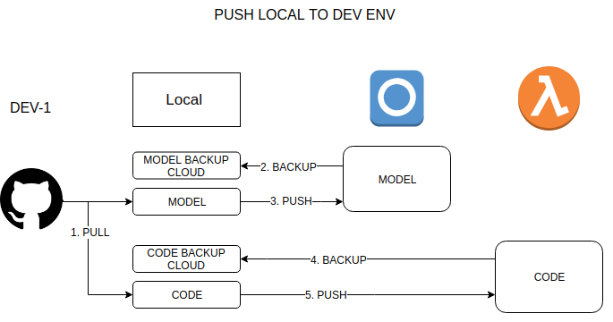
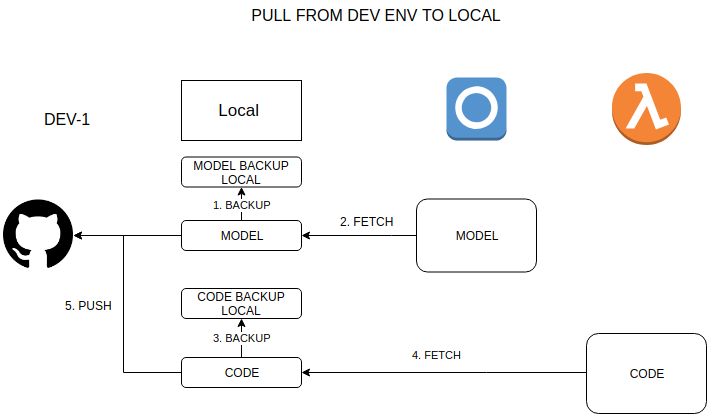

Introduction
There are several challenges in developing Alexa Skills in a multideveloper environment because the way in which is tested and deployed the skill itself. I’m proud for being part of a team which are going to start building an Alexa Skill. That’s exciting project that involves thinking in a different way at all levels, from thinking about Intents instead of functions or modules until configuring the development environment pipeline to keep on synch a multideveloper environment. ¡¡🚀💪 Challenge accepted 💪🚀!!
First Steps (Team, Requirements and Design)
First of all, our current team consists on Product Owner 👨🚀, Voice Apps UX 👨🎨, Voice Apps QA 👨🔬, and Developers👨💻. I was never involved on the requirements gathering and design stages for a Voice App, but the experience so far is quite different given the fact people is going to use our skill using voice at home and normally in a relaxed environment with no devices on hands.
Development Pipeline
One of the ⚡️ main challenges ⚡️ in Alexa Skill’s multideveloper environment is to keep in synch all the development environments without override others changes. The reason why that is quite difficult is because, nowadays, is not possible to develop / test our skill’s intents locally. So we need to sign in into Alexa Skill Kit Developer Account in order to be able to see and test our intents and interaction models. Then, as a developer I do need to make changes and / or deploy changes for interaction model on Alexa Cloud and use our local environment to develop the intent’s code.
In a nutshell, our Alexa Skill will need to store files in two places to be ready for test and try:
Skill Metadata fileandInteraction Model Definition fileare going to be published into oneAlexa Skill Kit Developer Consoleaccount (Amazon’s Cloud).Lambda Function Codeis going to be published inAmazon Web Services' Lambda function
There is no problem on having to deploy each part of the Alexa Skill on different cloud places, as we can see on that post, we can use some cli tools to help with the automatization of it. But the problem is that each developer needs to have the model and code deployed in order to test it and we don’t want override each other continuously.
Then, after few brainstorming meetings we decided:
- Each developer is going to have one different Alexa Skill Kit Development Console account. And also, is going to create its own skill on it.
- Each developer is going to have one different AWS account also linked with the Amazon Developer account.
- For each developer we are going to create a lambda function with that name:
ask-<skillType>-<skillName>-<profile>, where profile is the name of the profile created for that user. - There will be an Amazon Developer account for Staging (profile => STG)
- There will be an AWS Lambda Function for Staging (profile => STG).
- There will be an Amazon Developer account for PROD (profile => PROD). The production Amazon Developer account will be the only one that eventually is going to Deploy and Publish the Skill to Amazon SKill’s Store.
- There will be an AWS Lambda Function for Production (profile => PROD).
- We are going to use Github as a Control Version System and single source for the truth.
Multideveloper Environment Sync
In order to be able to sync Alexa Skill environment we have to build some scripts to push changes to cloud from local and the other way around.
Pull changes from Github and push them into Dev Environment (Getting the Dev environment ready with the latest changes)
☑️ 1. Dev will pull from github for latest changes
☑️ 2. Script to backup Interaction Model before pushing the new one
☑️ 3. Dev will deploy changes related with Interaction Model and Skill Metadata using ask cli tool
☑️ 4. Script to backup the Lambda function code before pushing the new one
☑️ 5. Dev will deploy changes related with Lambda Function Code to AWS using aws cli tool

Pull changes from Dev Environment and push them into Github
☑️ 1. Script to backup our local Interaction Model before overriding it
☑️ 2. Dev will get the model and skill metadata from Alexa Developer Console using ask cli tool
☑️ 3. Script to backup our local Lambda Function Code before overriding it
☑️ 4. Dev will get lambda function code from AWS using ask cli tool
☑️ 4.1. Dev will implement some changes (optional)
☑️ 5. Dev will push into Github using a feature branch

Testing
In terms of testing we will create a hook up to git commit in order to run linter and test before pushing changes and also we will integrate with Circle CI and Github.
Unit Testswill be created at Intent level.Integration Testswill be created if there are some external services and / or databases for the skill.- Multiple
Flow Testswill be created for each Intent.
Happy Voice App Coding 🎤🎤🎤!